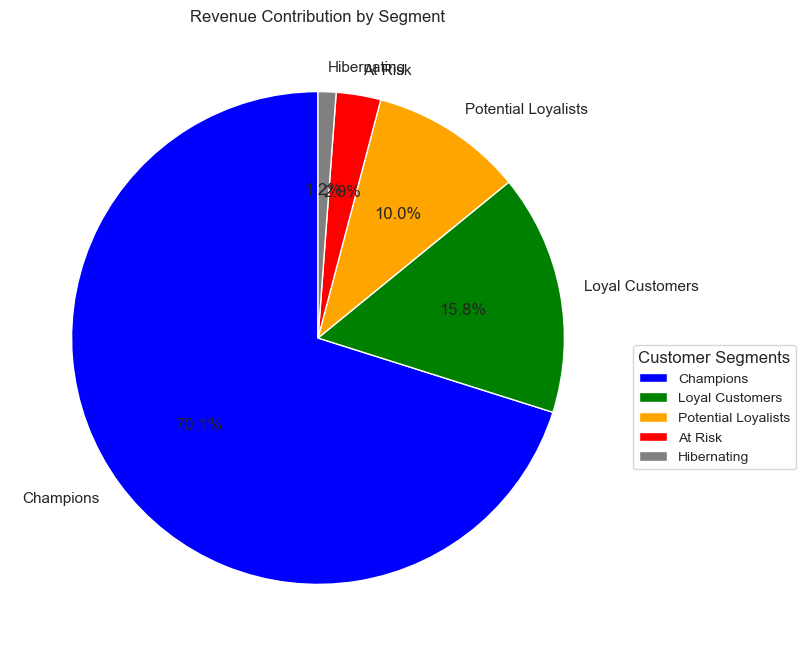
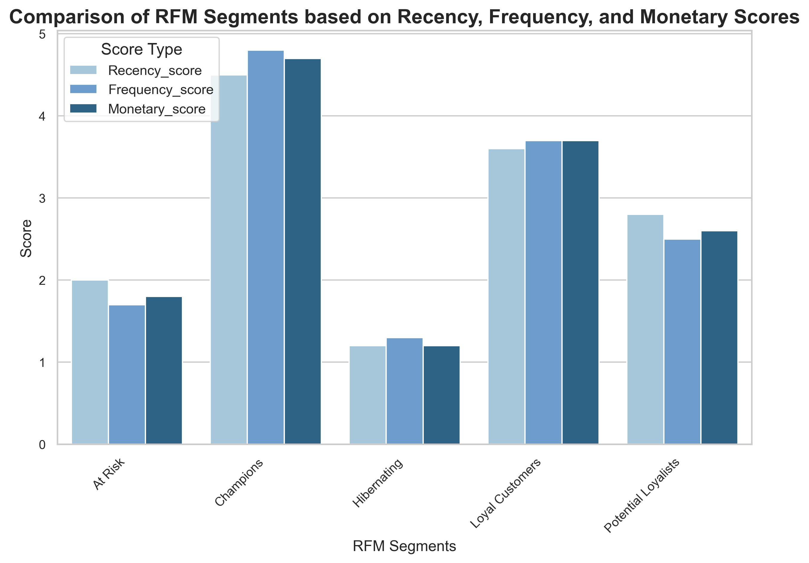

RFM Analysis Report
Revenue Contribution by Segment
| Segment |
Total Revenue |
Revenue Percentage |
| Champions |
$6255336.53 |
70.19% |
| Loyal Customers |
$1408629.91 |
15.81% |
| Potential Loyalists |
$882612.66 |
9.9% |
| At Risk |
$259877.89 |
2.92% |
| Hibernating |
$104950.91 |
1.18% |
Revenue Contribution Visualization

Customer Segments Distribution
Value Segment Distribution
Average RFM Scores Across Customer Segments

Customer Proportion vs Revenue Contribution Proportion
+---------------------+-----------------------+------------------------+
| Segment | Customer Proportion | Revenue Contribution |
+=====================+=======================+========================+
| Champions | 25.13% | 70.19% |
+---------------------+-----------------------+------------------------+
| Loyal Customers | 27.14% | 15.81% |
+---------------------+-----------------------+------------------------+
| Potential Loyalists | 29.35% | 9.90% |
+---------------------+-----------------------+------------------------+
| At Risk | 20.45% | 2.92% |
+---------------------+-----------------------+------------------------+
| Hibernating | 14.68% | 1.18% |
+---------------------+-----------------------+------------------------+
Recommendations
- Strengthening relationships with champions: Focus on retention strategies like exclusive loyalty programs, early access to products, or premium services. Ensure consistent and personalized communicatio to maintain their satisfaction and speding levels.
- Nurture loyal customers and potential loyalists: Create targeted campaigns to increase engagement, such as offering tiered rewards for higher spending or incentivizing frequent purchases. Educate these customers about additional products/services to encourage upselling and cross-selling
- Re-engage At Risk customers: Deploy win-back campaigns, including special offers, personalized outreach, or feedback collection to understand their disengagement. Focus on reactivating high-value customers within this segment.
- Optimize efforts for hibernating customers: Periodic reminders or seasonal promotions can re-engage this group, but prioritize resources on higher-value segments.
- Monitor and track performance: Regularly update RFM scores and revenue contributions to identify changes in customer behavior. Use these insights to refine marketing and operational strategies